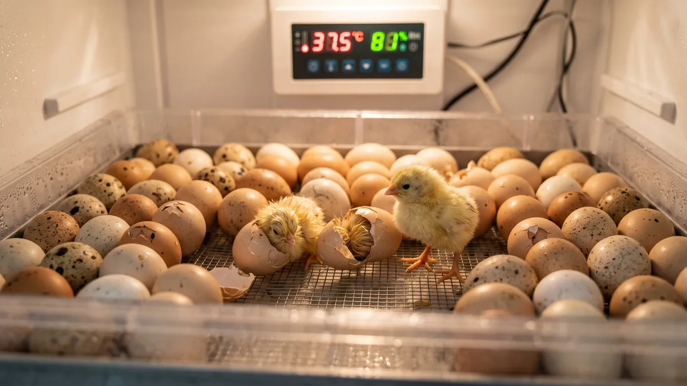
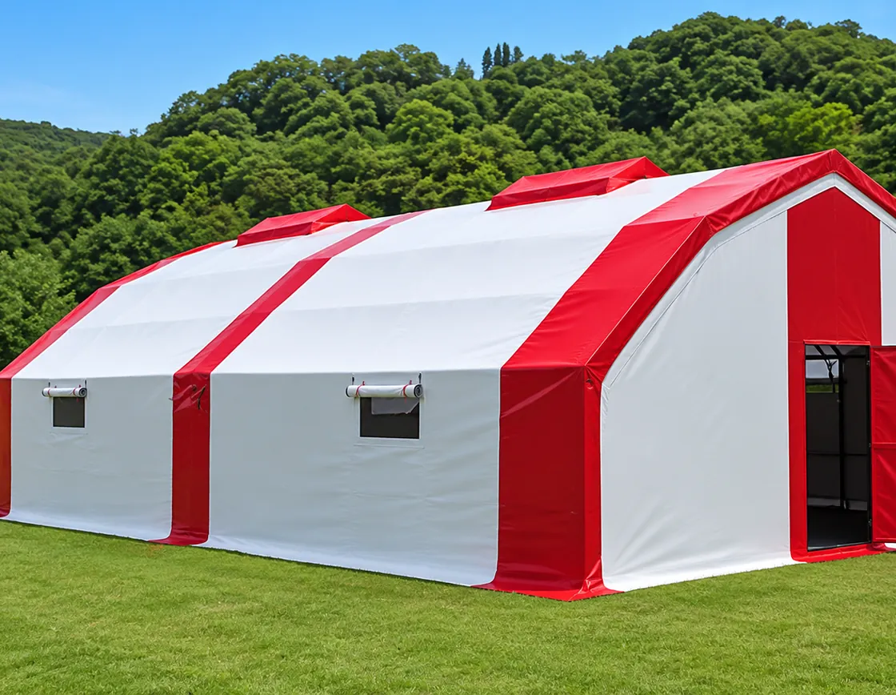

Kuluçka makinesiyle civciv çıkarma: 21 günlük rehber
Termostatı 37.5'e koymak yetmiyor. 21 gün boyunca sıcaklık, nem ve çevirmeyi gün gün nasıl yöneteceğin, ışıkta yumurtanın içini nasıl okuyacağın ve çıkım oranını neyin düşürdüğü.

Kuluçka makinesini ilk kez çalıştıran herkes aynı yeri kazır: makinenin ayarını değil, yumurtanın kaderini. "Termostatı 37.5'e koydum, neden 21 günde yarısı çıkmadı?" diye soranın onda dokuzunda kabahat makinede değil. Ya döllülük zayıf, ya nem başıboş, ya da yumurta daha rafa girmeden yanlış seçilmiş. Kuluçka sabır işidir; üç hafta boyunca yaptığın küçük hataların bedelini son üç günde, kabuğu delemeyen civcivlerle ödersin.
Bu yazıda tavuk yumurtasının 21 günlük yolculuğunu gün gün konuşacağız. Hangi yumurtayı makineye koyacağını, sıcaklığı ve nemi neye göre tutacağını, günde kaç kez çevireceğini, 7. ve 14. gün ışıkta ne göreceğini, son üç günde çevirmeyi neden durdurup nemi neden yükselttiğini. Sonunda da işin en çok soru gelen kısmını: neden çıkmadı?
Kuluçka makinesine hangi yumurta girer?
Makineye koyduğun yumurta ne kadar iyiyse, çıkım oranın o kadar yüksek olur. Basit ama herkesin atladığı bir kural. Damızlık için ayırdığın yumurtada şu dört şeyi ararım: temiz kabuk, orta boy, tazelik ve döllülük.
- Temiz olacak. Gübreli, çamurlu yumurtayı asla suyla yıkama; kabuktaki koruyucu tabakayı (kütikula) söker, içeri mikrop çeker. Hafif kirliyse kuru bir bezle sil, olmuyorsa o yumurtayı yemeye ayır.
- Orta boy olacak. Çok küçükten cılız civciv, çok iri ve çift sarılıdan çoğu zaman hiç civciv çıkmaz. 55-65 gram arası ideal.
- Taze olacak. Toplandıktan sonra en geç 7 gün içinde makineye koy. 10 günü geçen yumurtada çıkım oranı her gün biraz daha düşer. Bekletirken 15-18 derecede, sivri ucu aşağı bakacak şekilde tut.
- Döllü olacak. Horozsuz kümesten çıkan yumurta ne kadar taze olursa olsun civciv vermez. Kaç tavuğa bir horoz düştüğü, döllülüğün belini doğrudan etkiler; bu hesabı kümeste horoz şart mı yazısında ayrıntısıyla konuştuk.
Irk seçimi de işin içine girer. Bazı hatlar iyi kuluçkalık verir, bazıları vermez. Damızlık planı kuruyorsan tavuk ırkı seçimi tarafına bir göz at; makineye koyacağın yumurtanın hangi sürüden geldiği baştan belli olsun.
Kuluçka sıcaklık ve nem: 37.5 derece neden bu kadar hassas?
Tavuk yumurtası dar bir aralıkta gelişir. Havalı kabinli (fanlı) makinelerde sıcaklığı 37.5-37.8°C arasında tutarsın. Fansız, statik makinelerde yumurta hizasında biraz daha yüksek, 38-38.3°C okunur çünkü ısı üstte toplanır. Yarım derece sapma önemsiz sanılır ama değil: sürekli 38.5'te giden bir makine civcivi erken çıkarır ve göbek fıtıklı, cılız çıkar; sürekli 36.5'te giden geç çıkarır, çoğu kabukta ölür.
Nem tarafı sıcaklıktan daha çok ihmal edilir. İlk 18 gün nemi %50-55 tutarsın. Amaç yumurtanın içindeki suyun kontrollü buharlaşması, yani hava boşluğunun doğru büyümesi. Nem çok yüksek olursa civciv su içinde boğulur; çok düşük olursa kuruyup kabuğa yapışır. Son 3 günde, yani çıkım döneminde nemi %65-70'e çıkarırsın ki kabuk yumuşasın, civciv gagalarken kuru zara takılıp kalmasın.
Gün gün kuluçka takvimi: sıcaklık, nem, çevirme
Şu tabloyu makinenin yanına asmanı tavsiye ederim. 21 günü tek bakışta görürsün. Değerler fanlı makine içindir; statik makinede sıcaklığı yarım derece yukarı çek.
| Dönem | Sıcaklık | Nem | Çevirme | Havalandırma |
|---|---|---|---|---|
| 1-7. gün | 37.5-37.8°C | %50-55 | Günde 3-5 kez | Az, delikler kısmen kapalı |
| 8-14. gün | 37.5-37.8°C | %50-55 | Günde 3-5 kez | Orta, embriyo büyüdükçe artır |
| 15-18. gün | 37.5-37.8°C | %50-55 | Günde 3-5 kez | Tam aç, oksijen ihtiyacı zirvede |
| 19-21. gün (çıkım) | 37.2-37.5°C | %65-70 | DUR | Tam aç, nefeslik açık |
Dikkat: son üç günde sıcaklığı bir tık düşürüp (37.2-37.5°C) nemi yükseltirsin çünkü çıkan civcivler kendi ısılarını üretmeye başlar, makine içi ısınır. Çevirmeyi de burada tamamen durdurursun.
Yumurta çevirme: günde kaç kez, neden?
Çevirme kuluçkanın en çok savsaklanan işidir, oysa göz ardı edersen embriyo kabuğun bir yanına yapışır ve ölür. Doğadaki kuluçkada tavuk yumurtaları saatte birkaç kez döndürür, ayağıyla iter. Makinede bunu sen ya da otomatik çevirici yapacak.
Günde en az 3, ideali 5 kez çevir. Tek sayı olması önemli: gündüz çok, gece az çevirdiğin için yumurta her gece farklı yüzüne yatsın diye tek sayı seçilir. Elle çeviriyorsan yumurtaların üstüne kurşun kalemle bir yüze X, öbür yüze O yaz; hangisini çevirdiğini şaşırmazsın. 180 derece değil, yaklaşık 45 derece yatırıp yatırıp geri getirmek yeterli.
Otomatik çevirici olan makine bu derdi bitirir ama körü körüne güvenme; motoru arada bir izle, tepsinin gerçekten hareket ettiğini gör. Çeviricinin haftalarca durduğunu 18. günde fark eden çok üretici tanıdım.

500 Tavukluk Tavuk Çadırı
Makineden 100-120 civciv çıkardıktan sonra sıra onları büyütmeye gelir; ilk sürünü kışın donmayan yazın kavurmayan, 3-4 kat yalıtımlı bir alana al, 500 tavukluk Tavuk Çadırı damızlık sürüsünü genişletmek için tam ölçü, 81 ilde anahtar teslim kurulur.
Işıklama: 7. ve 14. günde yumurtanın içini oku
Işıklama (kandiling), karanlık odada yumurtanın altına güçlü bir ışık tutup içini görmektir. El feneri bile iş görür. İki kez yaparım: 7. ve 14. gün.
7. günde döllü yumurtanın içinde örümcek ağı gibi ince damarlar ve ortada koyu bir nokta (embriyonun gözü) görürsün. Işığı sallayınca hafif oynar. Berrak, bomboş görünen yumurta döllenmemiştir; onu at, yoksa günün birinde patlayıp bütün makineyi kokutur. İçinde tek bir kan halkası olan yumurta ise erken ölmüştür, onu da çıkar.
14. günde yumurtanın büyük kısmı kararmış, sadece geniş uçtaki hava boşluğu aydınlık kalmış olur. Bu boşluğun büyüklüğü sana nem hakkında bilgi verir; küçükse nem fazla, büyükse nem az. Ölü embriyoyu bu turda da ayıklarsın. Az yumurtayla temiz gitmek, çok yumurtayla kokuşmuş bir makineden iyidir.
Son 3 gün: çıkım nasıl olur, ne yapmamalısın?
18. günün sonunda yumurtaları çeviriciden alıp makinenin tabanına, yan yana yatırırsın. Çevirme durur, nem %65-70'e çıkar, kapağı artık açmazsın. İşte en zor sınav bu: 19-21. gün arası merakına yenilip kapağı sık sık açmamak. Her açışta içerideki nem bir anda kaçar, kabuk kurur ve civciv o kuru zara yapışıp içeride ölür. Buna "yapışkan civciv" deriz, kuluçkanın en can sıkıcı kaybıdır.
Civciv önce hava boşluğuna kafasını uzatır, kabuğu içeriden çıtlatır (pip), sonra saatler içinde daireyi çizerek kabuğu ikiye ayırır. Bu 12-24 saat sürebilir. Sakın yardım etme. Erken müdahale edip kabuğu kırdığın civcivlerin çoğu kanar ya da göbeği kapanmadan çıkıp ölür. Kuruyup tüylenene kadar makinede birkaç saat kalsın, ondan sonra alırsın.
Neden çıkmadı? Kuluçkada en sık patlayan hatalar
Bir kuluçkadan beklediğin çıkım oranı, döllü yumurtada %75-90'dır. Bunun altına düştüysen sebep genelde şu dördünden biridir:
- Döllülük düşük. Çıkmayan yumurtaların çoğu 7. gün ışıklamada bomboşsa sorun makinede değil, sürüde. Horoz yaşlı, oranı yanlış ya da tavuklar kışın verimsiz. Buradan başla.
- Sıcaklık sapması. Elektrik kesintisi, güneş gören oda, bozuk termostat. Makineyi sabit ısılı, güneş almayan bir odaya koy. Yaz sıcağında oda 30 dereceyi geçiyorsa makine soğuyamaz, embriyo pişer.
- Nem yanlış. Son üç günde nemi yükseltmezsen yapışkan civciv olur; ilk 18 gün nem çok yüksekse civciv su toplayıp boğulur. Hava boşluğuna bakarak ayarla.
- Düzensiz çevirme. Günde 3'ün altına düşen ya da hiç çevrilmeyen yumurtada embriyo kabuğa yapışır. Otomatik çeviricinin çalıştığını gözünle doğrula.
Kuluçka, damızlık işine girmenin ilk adımı. Kendi civcivini çıkarabiliyorsan yarka parasından kurtulur, sürünü kontrollü büyütürsün. Ama işi büyütüp 500 tavukla yumurta işine ya da ötesine taşıyacaksan, çıkardığın civcivlerin gideceği barınağı baştan planla. Rakamların kağıt üstünde nasıl durduğunu merak ediyorsan tavukçuluk kârlı mı hesabına da bak.
Son bir saha tavsiyesi: ilk kuluçkanı en fazla 20-30 yumurtayla yap. Makinenin karakterini, o odanın ısısını, kendi disiplinini bu küçük partide öğren. Termometrenin yalanını, çeviricinin numarasını, nemin oyununu ilk turda 100 yumurta yakarak değil, bir avuç yumurtayla öğren. İkinci turda makinenin tepsisini gönül rahatlığıyla doldurursun.
Sık sorulanlar
Kuluçka makinesinde sıcaklık kaç derece olmalı?
İlk 18 gün ve son 3 günde nem ne kadar olmalı?
Yumurta günde kaç kez çevrilmeli?
Işıklama (kandiling) ne zaman yapılır, ne görülür?
Civciv kabuğu delemiyorsa yardım etmeli miyim?
Kuluçkadan neden az civciv çıkıyor?
Projenizi birlikte planlayalım
Kapasitenizi ve bölgenizi yazın; ölçü ve teklifi birlikte çıkaralım.
Kapasitenizi yazın